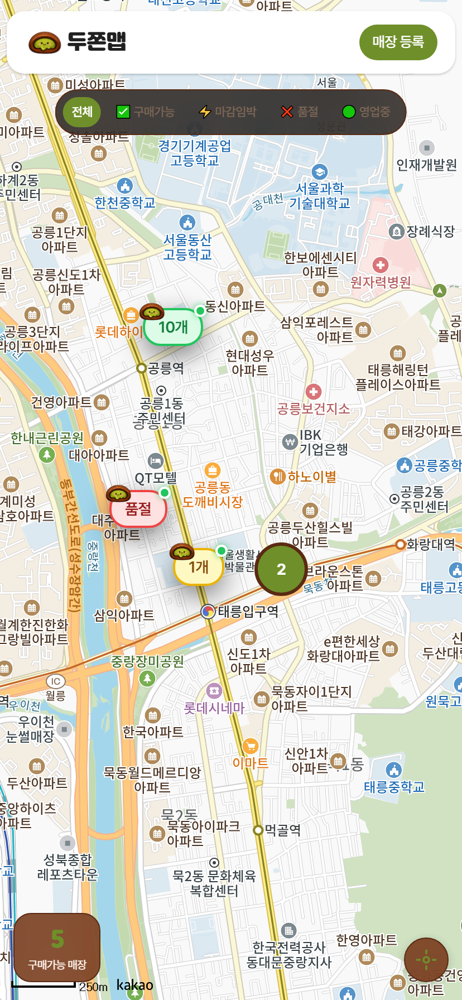
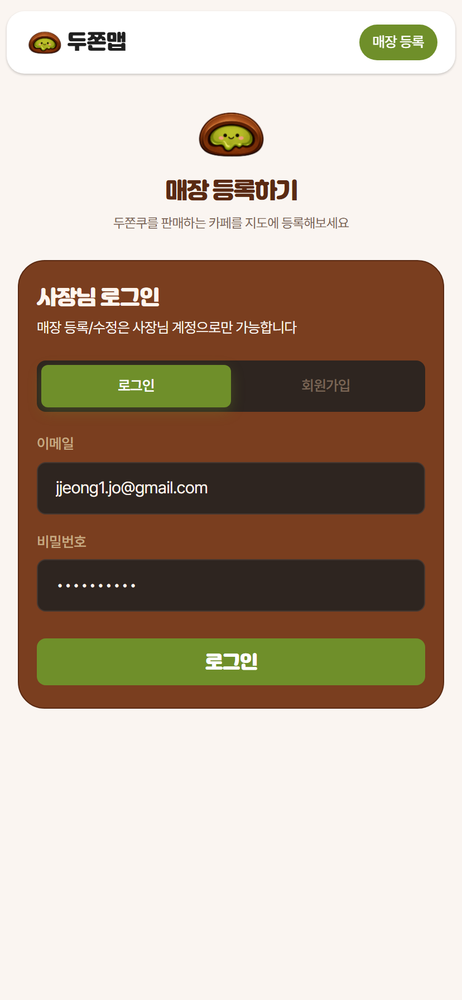
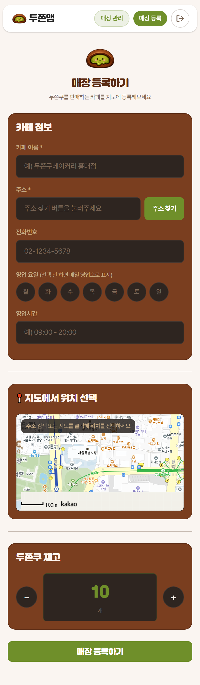
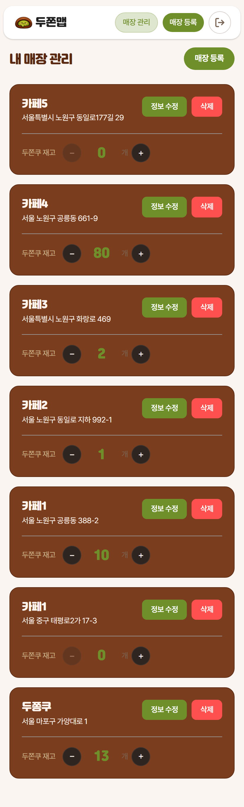
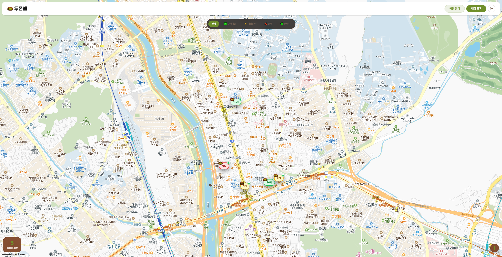
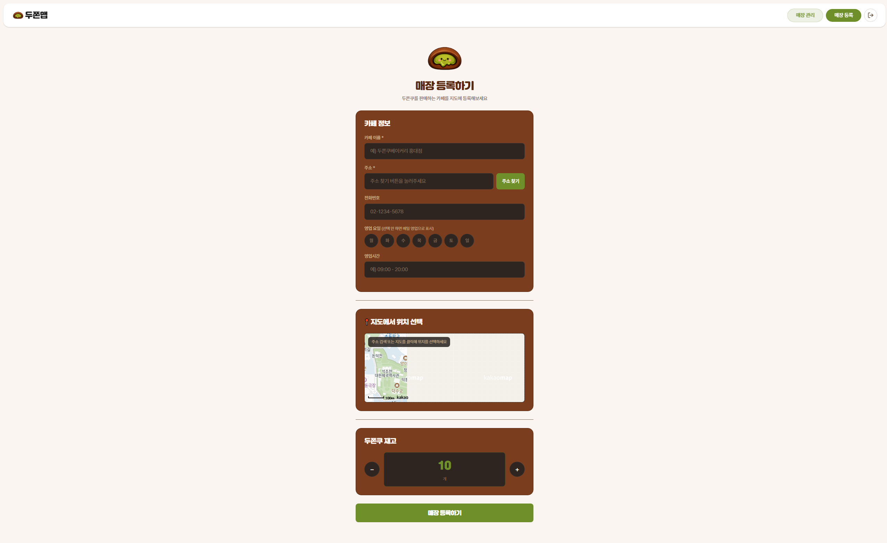

두쫀맵

About Project
-
프로젝트 기간:
26.03.09 ~ 26.03.13
-
프로젝트 인원:
1명(조정원)
-
역할 (담당 업무):
1. UI 퍼블리싱 100%
2. 프론트엔드 개발 100% 3. 백엔드 개발(firebase) 100% -
프로젝트 설명:
두쫀맵은 두쫀쿠를 판매하는 카페의 실시간 재고를 지도 위에서 한눈에 확인할 수 있는 서비스입니다.
사장님이 직접 재고·영업시간·영업 요일을 등록·관리하고, 손님은 지도에서 구매가능 / 마감임박 / 품절 상태를 보고 헛걸음 없이 방문할 수 있습니다. -
기술 스택:
- React.js
- Firebase
- Scss(Sass) (UI 스타일링) - URL:
Publishing Guide
-
_variables.scss
(2) Typography
여기어때 잘난체
Pretendard
여기어때 잘난체
Pretendard
(3) SCSS/SASS
-
SCSS/SASS
- Dark Mode
SCSS/SASS의 변수, 믹스인, 중첩 선택자, 파일 분리(@use/@forward)를 체계적으로 활용하면 반복되는 스타일 패턴을 재사용 가능한 단위로 추상화할 수 있으며, 디자인 토큰(색상, 간격, 폰트 등)을 변수로 중앙 관리함으로써 수정 시 단 한 곳만 변경해도 프로젝트 전체에 일관되게 반영됩니다. 또한 컴포넌트 단위로 파일을 분리하여 관심사를 명확히 분리할 수 있고, 믹스인을 통해 미디어 쿼리나 반복 패턴을 함수처럼 재사용할 수 있어 협업 환경에서도 스타일 규칙의 일관성을 유지하기 쉽습니다. 이러한 구조적 접근 방식은 프로젝트 규모가 커질수록 유지보수 비용을 낮추고, 새로운 기능 추가나 디자인 변경에도 빠르게 대응할 수 있는 확장성 높은 스타일 아키텍처를 구축하게 해줍니다.
(4) Firebase
Firebase Auth — 이메일/비밀번호 방식으로 가게 사장님 회원가입·로그인·로그아웃을 처리하고, onAuthStateChanged로 로그인 상태를 앱 전역에서 실시간 감지한다.
Firestore (stores 컬렉션) — 가게 등록·수정·삭제와 두쫀쿠 재고(duzzonCount) 업데이트, 오늘 마감 여부(closedDate) 토글을 CRUD로 관리하며, onSnapshot으로 지도 화면에 실시간 반영한다.
권한 흐름 — 로그인한 사용자만 가게 등록/수정/삭제가 가능하고, 비로그인 사용자는 지도에서 가게 목록 조회만 할 수 있는 구조다.




(5) 직관적인 실시간 재고 지도
지도 위 마커가 두쫀쿠 재고 수량에 따라 초록(구매가능) / 노랑(마감임박) / 빨강(품절) 색상으로 즉시 구분되어, 사용자가 별도 클릭 없이 한눈에 재고 상황을 파악할 수 있습니다. Firestore onSnapshot으로 실시간 동기화되기 때문에 사장님이 재고를 수정하면 지도를 새로고침 없이 바로 반영됩니다.

(6) 사장님 전용 간편 매장 관리
매장 등록 페이지에서 로그인/회원가입부터 매장 정보 입력, 카카오 지도 위치 지정까지 한 화면에서 모두 처리할 수 있습니다. 로그인한 사장님에게만 재고 수정·오늘 마감 토글·매장 삭제 버튼이 노출되고, 일반 사용자에게는 전화하기 버튼만 보이는 권한 분리가 깔끔하게 구현되어 있습니다.

(7) 영업 상태 자동 판단 필터
영업 요일·시간·오늘 마감 여부를 종합해서 지금 이 순간 영업 중인 가게만 필터링하는 기능이 있습니다. 단순 재고 필터(전체/구매가능/마감임박/품절)와 함께 "영업중" 필터를 제공하여, 재고가 있어도 문 닫은 가게를 걸러낼 수 있어 사용자 경험이 더 실용적입니다.
(8) 디저트 트렌드에 맞춰 빠르게 재활용 가능한 구조
두쫀쿠 외에도 버터떡등 유행하는 디저트가 생길 때마다 아이콘과 브랜드명만 교체하면 동일한 "재고 현황 지도 서비스"로 즉시 재활용할 수 있습니다. 지도·인증·재고 관리 로직이 모두 범용적으로 설계되어 있어, 특정 디저트에 종속되지 않고 어떤 한정 수량 판매 아이템에도 빠르게 적용할 수 있는 확장성이 이 프로젝트의 숨은 강점입니다.